Introduction
Getting to know FlowTrace
FlowTrace is a data acquisition and monitoring application for surface well testing. It reads the field sensors through a Modbus RTU device, shows the values live, saves every reading, calculates liquid and gas rates, raises alarms, and turns the data into graphs, tables and reports.
| You can | Details |
|---|---|
| Read sensors | Up to 125 channels from one Modbus RTU device over COM / RS-485. |
| Log automatically | Every reading is saved to the Project database and a daily CSV file. |
| Measure | Liquid, oil and water rates and cumulatives, orifice gas rate (AGA-3), SF-DP, choke records. |
| Watch | Live Stream, Monitoring View, trend graphs and High / Low alarms. |
| Report | Graph Studio PDFs, End-of-Well Report, calibration reports, P&ID sheets, challans, Excel exports. |
The main window
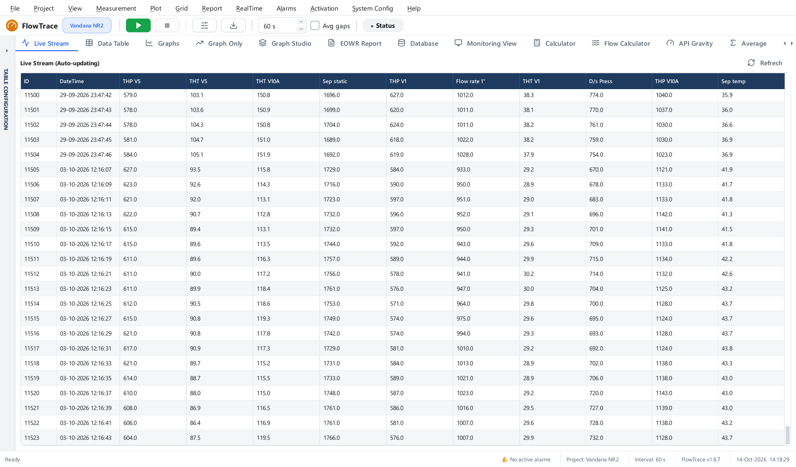
| Area | What it is for |
|---|---|
| Menu bar | File, Project, View, Measurement, Plot, Grid, Report, RealTime, Alarms, Activation, System Config and Help. |
| Toolbar | Active Project, Start / Stop Monitoring, Channels, Export Data, Log interval, Average gaps and the monitoring status. |
| Sidebar (left) | Table Configuration: choose which columns are shown. Collapse or expand it with the arrow. |
| Tabs | Live Stream, Data Table, Graphs, Graph Only, Graph Studio, EOWR Report, Database, Monitoring View, Calculator, Flow Calculator, API Gravity, Average, Calibration Reports, MMT and P&ID. |
| Status bar (bottom) | Licence status, messages, the alarm chip, Project, Log interval, version and clock. |
The toolbar
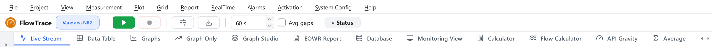
On smaller screens some toolbar buttons show only their icon. Hover over an icon to see its name. Press F1 anywhere to open the built-in Help.
Before the job
Activation and Projects
Activate FlowTrace on this computer
FlowTrace needs an activation key made for this computer. A key works only on the computer it was made for. No internet connection is needed.
- Start FlowTrace and name your first Project. The activation window opens and shows this computer's Machine Code (for example TNR5-P8J7-8PCN).
- Click Copy and send the Machine Code to the administrator by phone, WhatsApp or email.
- You receive a licence file (.lic) or a key. Copy the file to this computer and click Load License File..., or paste the key and click Activate.
| Shown at the bottom left | Meaning |
|---|---|
| Licensed · N days left | Full licence, active. |
| Trial · N days left | Time-limited trial licence. |
| License expires in N days | Fewer than 15 days left. Ask for a renewal key. |
| License expired | Enter a new key in Activation › Activate / Renew... |
| License cancelled | The administrator cancelled this computer's licence. |
When a licence ends, monitoring stops and all data logged so far stays saved. A new computer, a Windows reinstall or a new motherboard gives a new Machine Code and needs a new key.
One Project per well or job
A Project keeps everything for one job together: connection settings, channels, measurement columns, alarms, the database, CSV logs, reports and exports. Switching Project switches all of it.
| To do this | Use |
|---|---|
| Start a new job with empty data | Project › New Project... |
| Go back to an earlier job | Project › Open Project... |
| Bring in a Project from another PC or a backup | Project › Import Project... |
| Make a full copy of the current Project | File › Save Project As... |
Name the Project after the well (for example Well-1). The name is shown on the toolbar and in the status bar, so everyone can see which job is being logged.
Hardware set-up
Device and channels
Connect to the Modbus device
- Plug the Modbus device (or USB-to-RS485 converter) into the computer and power it on.
- Click System Config in the menu bar, next to Help.
- On the Connection tab click Auto Detect, or pick the COM port yourself.
- Set Baudrate, Parity, Stop Bits, Byte Size, Timeout and Slave ID to exactly what the device uses.
- Optional: on the Storage tab change the Export Path and Database Path with Browse...
- Click OK.
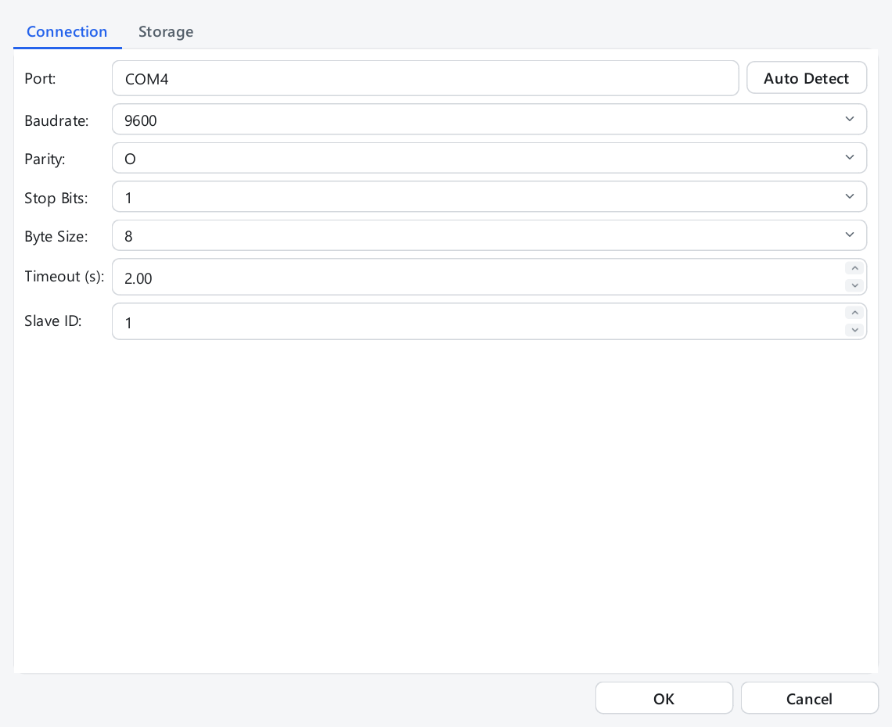
| Setting | What to enter |
|---|---|
| Port | The COM port of the device or converter (see Windows Device Manager). |
| Baudrate | Communication speed, for example 9600. |
| Parity | None, Even or Odd. Must match the device. |
| Stop Bits / Byte Size | Usually 1 and 8. |
| Timeout (s) | How long to wait for an answer before retrying. |
| Slave ID | The Modbus address of the device. |
A mismatch in Baudrate or Parity is the most common reason for no data. Read the settings from the device's label or manual.
Set up channels
Channels are the sensor values FlowTrace reads from the device. Open them with Channels on the toolbar or Measurement › Channels...
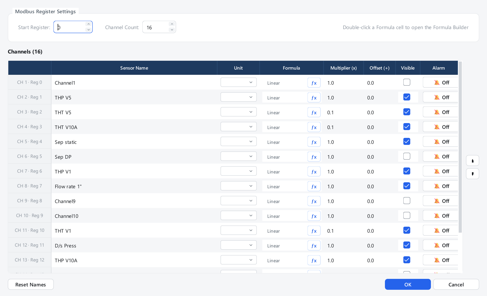
- Set Start Register (the first register to read) and Channel Count (1 to 125).
- Fill in each row as described in the table below.
- Use the ▲ / ▼ buttons on the right to change the channel order.
- Click OK. The names and units appear in every tab.
| Column | Use |
|---|---|
| Sensor Name | A clear name, for example THP V5 or Sep temp. |
| Unit | The unit the value is shown in. |
| Formula | Double-click (or click ƒx) to open the Formula Builder if the raw value needs converting. Leave Linear for a direct reading. |
| Multiplier (x) / Offset (+) | Scale and shift the value for calibration. Example: a temperature sent in tenths uses multiplier 0.1. |
| Visible | Untick to hide a channel you don't need. |
| Alarm | Opens the warning and alarm levels for that channel. See chapter 7. |
Sensor re-wired to another channel during the job? Right-click that channel's heading in the Data Table and choose Sensor moved to another channel... Earlier readings stay on the old channel, new readings go to the new one.
During the job
Logging readings
Start and stop monitoring
- Set Log interval on the toolbar (1 to 300 seconds). This is how often a reading is saved, for example 60 s for one reading per minute.
- Optional: tick Average gaps to save the average of the readings taken during each interval instead of a single reading.
- Click the green Start Monitoring button (also in the RealTime menu). FlowTrace tries to connect up to 3 times and shows each attempt in the status.
- The status changes to Live when the device answers, and readings appear in the Live Stream.
- Click Stop Monitoring when the job is done. All logged data stays saved in the Project.
Log interval and Average gaps can only be changed while monitoring is stopped. The Log interval is saved with the Project, so it is the same the next time the Project opens.
What happens while monitoring
- Every Start creates a new logging session, so separate runs are never mixed together.
- Each saved reading goes to the Project database and to a CSV file in the Live Log CSV folder of the export path, the moment it is read.
- Live Stream, Data Table, Graphs and Monitoring View update automatically. Monitoring View refreshes every second.
- Running totals (Cum Gas, Liquid / Oil / Water Cum) add the real time between readings. If logging stopped for a while, that gap is not counted as flow.
- Alarms are checked on every logged reading (chapter 7).
If the connection drops during a job, monitoring stops safely. Fix the cable or power and click Start Monitoring again. A new session starts and earlier data is kept.
Working with the data
Viewing and editing data
Live Stream
The Live Stream tab lists the latest readings, oldest at the top and newest at the bottom, one column per channel (Fig 1.1).
- The table follows the newest reading. Scroll up to look at earlier rows; it stays there until you scroll back to the bottom.
- Drag a column border to resize a column. Click Refresh to reload from the database.
Monitoring View
A compact window with the current value of every channel and measurement column, grouped like the sidebar. Put it on a second screen in the control cabin.
- Click the Monitoring View tab. It opens as its own window.
- Use the Group list to show one group, or All Inputs.
- Values refresh every second while monitoring. Size and position are remembered.
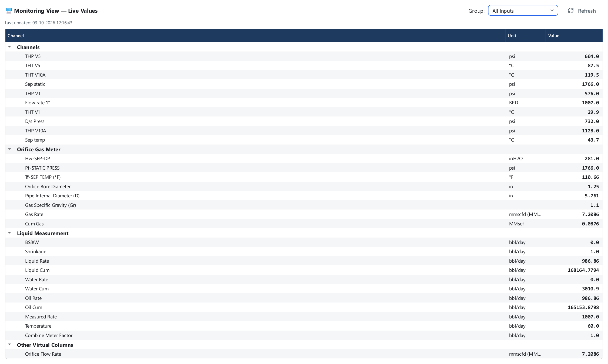
Data Table
The main grid: one row per saved reading, one column per channel and measurement column. A band above the headings groups the columns (Date / Time, Choke, Channels, and each measurement).
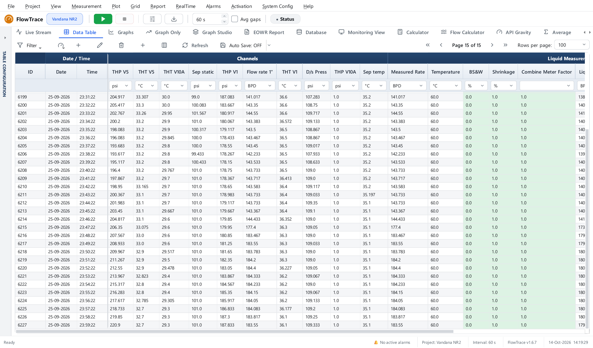
Find the rows you need
- Click Filter in the Data Table toolbar.
- Set the Start and End date / time. Optional: choose an Interval Filter (seconds, minutes or hours) to show one row per interval.
- Click Apply Filter. Reset returns to today's full day.
Toolbar buttons
| Button | Use |
|---|---|
| Add Record | Add a reading by hand. |
| Delete Record | Remove the selected reading (you are asked to confirm). |
| Add Virtual Column | Add your own calculated column (chapter 6). |
| Reorder Columns | Change column order and visibility. |
| Refresh | Reload the table. |
| Auto Save | Saves the table to Excel on a timer. The small arrow sets the interval and opens the Auto Save folder. |
| Page controls | Rows per page and First / Previous / Next / Last for large data sets. |
Headings, units and colours
- Under every heading you can pick a unit label (psi, bar, °C, BPD, MMscfd...). It is a label only and never changes a value. To convert values, change the unit in Channels.
- Green cells are values entered by the engineer (choke, BS&W, orifice data).
- A cell coloured red or yellow is a reading on which an alarm fired (chapter 7).
- Grid › Resize Columns to Fit sizes every column to its content.
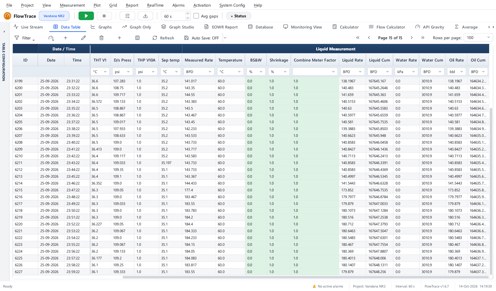
Show or hide columns
The Table Configuration sidebar on the left controls which columns are shown in the Data Table, the Database tab and Excel exports.
- Type in the sidebar search box to find a column.
- Tick or untick a column. Ticking a group heading shows or hides the whole group.
- Use Show all / Hide all to change everything at once.
Hiding a column never deletes its data. Tick it again to bring it back.
Calculations on every reading
Measurement columns
The Measurement menu adds ready-made measurement columns. They all work the same way: pick the sensor channel for each input (or a fixed value where offered), enter the meter or job parameters, and save. The new columns appear as their own group in the Data Table, sidebar, Monitoring View, graphs and Excel exports.
Liquid, Oil and Water Measurement
- Open Measurement › Liquid Measurement Rate... (or Oil / Water Measurement).
- Assign the measured-rate sensor and, where asked, the temperature and pressure sensors, or switch to Fixed and type a value.
- Enter BS&W, Shrinkage, Meter Factor and Combine Meter Factor.
- Enter the Starting Liquid, Water and Oil Cumulative if the job continues from earlier totals.
- Choose the Output Unit and click Calculate to preview with the latest reading.
- Click Save Config or Save as Column.
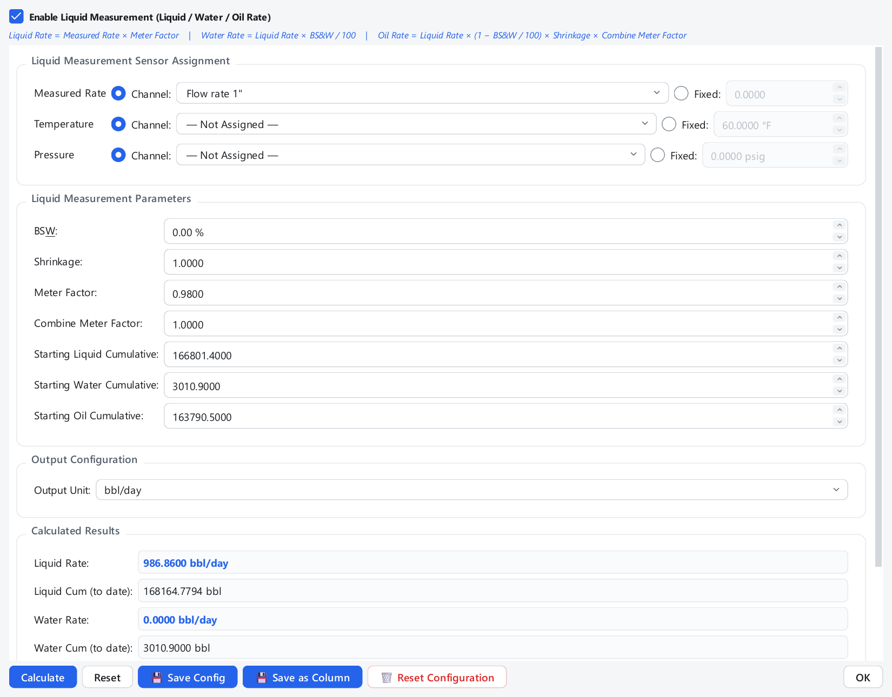
Orifice Gas Flow (AGA-3)
- Open Measurement › Orifice Gas Flow...
- Assign hw (differential pressure, inH₂O), Pf (flowing pressure, psig) and Tf (flowing temperature) channels. Tf can also be a fixed value. A Tf channel in °C is converted to °F automatically.
- Enter orifice bore (d), pipe internal diameter (D), gas specific gravity, base pressure and temperature, k and Fpv.
- Enter the Starting Cumulative Gas if the job continues from an earlier total.
- Choose the Output Unit and click Calculate. Flow rate, beta ratio, cumulative gas and every correction factor are shown.
- Click Save Config to add the Gas Rate and Cum Gas columns.
- Discharge coefficient: Reader-Harris / Gallagher (ISO 5167-2), with the expansion factor Y.
- Z-factor: DAK correlation from gas gravity, at flowing and base conditions.
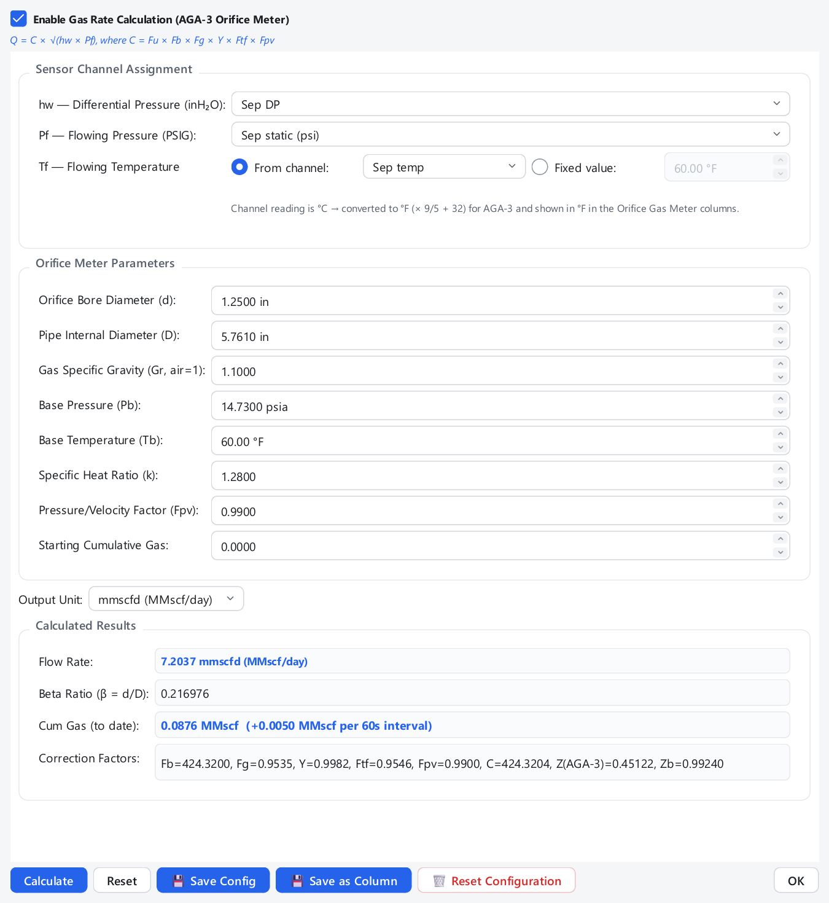
Save Config recalculates the gas rate and cumulative gas of the whole stored history with the settings in the dialog. Check bore, gravity and the Tf channel before saving on a running job.
SF-DP Measurement
- Open Measurement › SF-DP Measurement...
- Choose the SF channel and the DP channel, or a fixed value for either.
- Optional: under Warnings & Alarms, switch on levels and set their limits (chapter 7).
- Click Save. Three columns are added: SF, DP and the SF − DP difference.
- Open the same menu item again to edit them.
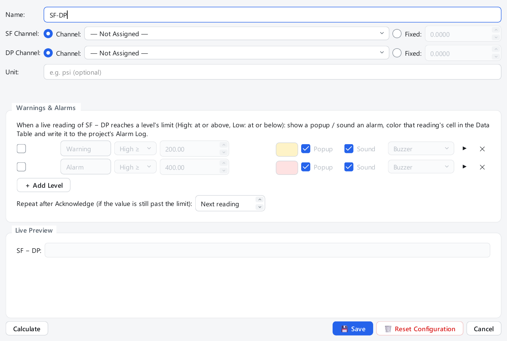
Choke Manager
Record each choke change, so every reading shows the choke that was in service at that time.
- Open Measurement › Choke Manager...
- Click Add Row each time the choke is changed: date / time, choke size and choke type.
- Pick the Choke Size unit: 1/64 in or mm (mm = x / 64 × 25.4). Values are always stored in 1/64 in.
- Click OK. Every reading from that time onward shows that choke, until the next change.
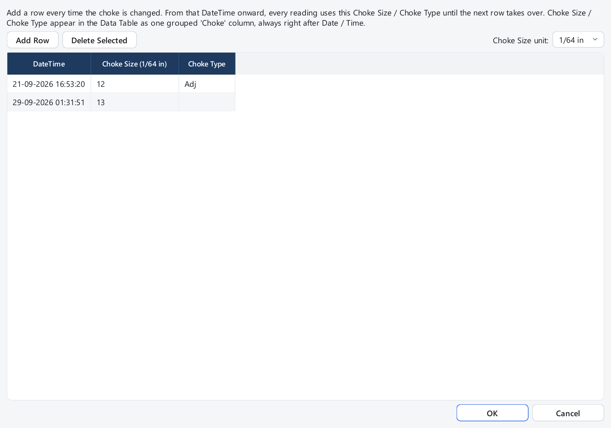
Virtual columns
- In the Data Table click Add Virtual Column.
- Give the column a name and unit, and build the expression from your channels.
- Save. The column is calculated for every reading, old and new, and can be shown, hidden and reordered like any other column.
Safety
Alarms
Any Data Table column can have up to 5 alarm levels: channels, Gas Rate, Cum Gas, Liquid / Oil / Water, SF-DP and virtual columns. Each level is High (value at or above the limit) or Low (at or below), with its own name, limit, colour, popup and sound.
Set alarm levels
Open the level editor from any of these places:
- Channel Configuration: the Alarm button on the channel's row.
- Data Table: right-click the column heading › 🔔 Alarm...
- SF-DP Measurement: the Warnings & Alarms box.
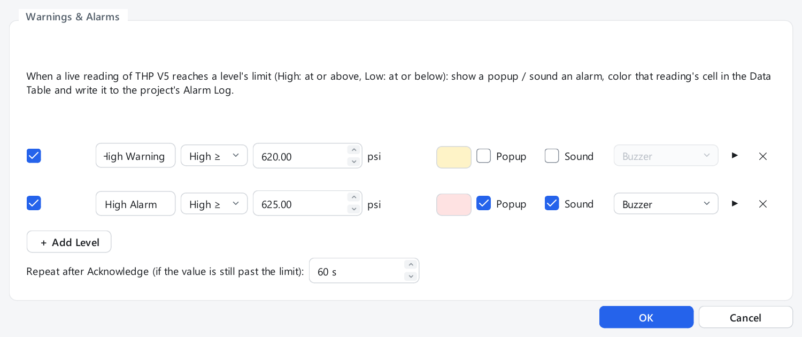
- Tick the box at the start of a row to switch the level on.
- Type the level name, choose High ≥ or Low ≤ and enter the limit.
- Click the colour box to pick the cell colour.
- Tick Popup and / or Sound, choose the sound (buzzer, chime...) and press ▶ to hear it.
- Use ＋ Add Level for more levels and ✕ to remove one.
- Set Repeat after Acknowledge: if the value is still past the limit after this time, the alarm comes back.
- Click OK.
When an alarm fires
- A popup shows the level, value, limit and reading time, and the sound plays until someone responds.
- Only the reading the alarm fired on is coloured in the Data Table (also in Export Data).
- The status-bar alarm chip turns red while an alarm is not acknowledged.
- Every event goes to the project's Alarm Log.csv.
- Press Mute to stop the sound (logged as SILENCED).
- Press Acknowledge once the situation is handled (logged as ACKNOWLEDGED).
The popup stays open until acknowledged, even if the value has returned to normal, so a short spike is never missed. A small deadband stops a value hovering on the limit from alarming on every reading.
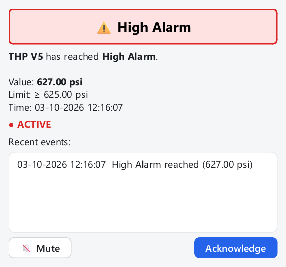
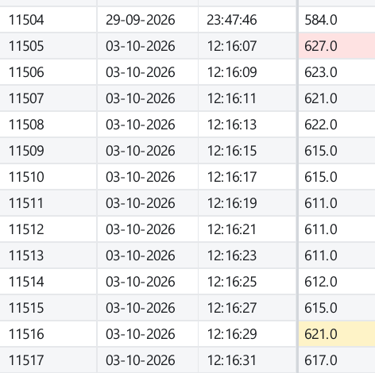
Colour key used in this example
The colours are your own choice per level. Pick colours that are easy to tell apart on the crew's screens.
Alarms window and Alarm Log
Open it from Alarms › Active Alarms & Alarm Log... or by clicking the status-bar alarm chip.
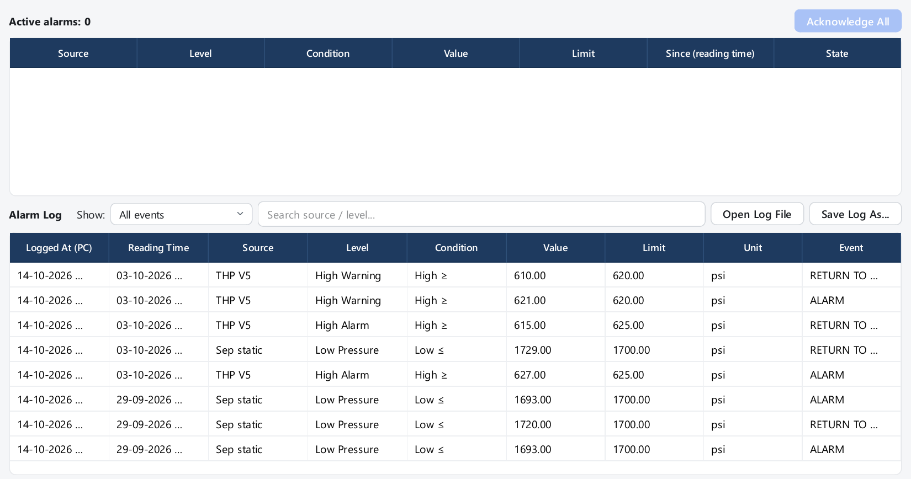
| Event | Logged when |
|---|---|
| ALARM | A reading reaches a level's limit. |
| SILENCED | Mute is pressed on the popup. |
| ACKNOWLEDGED | Acknowledge is pressed (or Acknowledge All). |
| RETURN TO NORMAL | The value moves back past the limit. |
- Acknowledge All or Ctrl+Shift+A acknowledges every active alarm.
- Filter the log with Show and the search box; Save Log As... exports it.
- Alarms are checked on logged readings, so they follow the selected Log interval.
Trends
Graphs and Graph Studio
Graphs
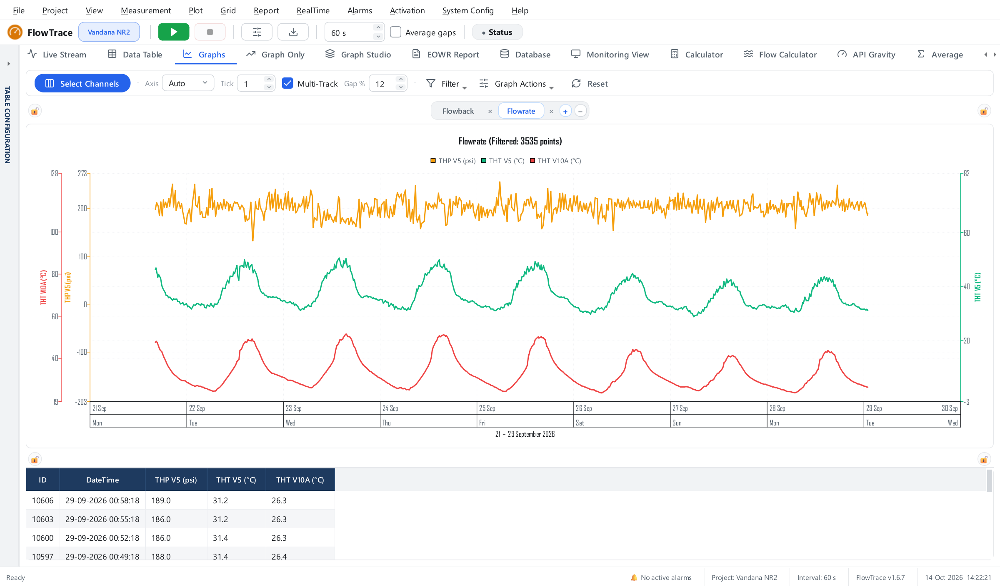
- Open the Graphs tab and click Select Channels to choose the channels, their Y-axis and line colour.
- Click Filter, set the date / time range and interval, then Apply Filter. Reset clears the filter.
- Optional: tick Multi-Track to give each channel its own band.
- Hover over a line to read the exact value and time. Right-click the chart to add, edit or remove an annotation.
| To do this | Do |
|---|---|
| Zoom the time axis | Scroll the mouse wheel over the chart. |
| Move along time | Drag inside the chart. |
| Move or stretch a Y-axis | Drag the axis up or down; drag near its top or bottom end to stretch it. |
| Lock an edge | Click a padlock at a chart corner: top padlocks fix the Y-axis tops, bottom padlocks fix the time start / end. |
| Keep several graphs | Use the profile strip above the chart (for example Flowback, Flowrate): + adds, − removes, right-click renames. |
| Export or reset | Graph Actions: Export Graph Data (Excel), Export Graph as PDF, Reset View, Full Screen. |
Graph Only and Full Screen
- The Graph Only tab shows the same chart with nothing else on screen, ideal for a second monitor. It has the same profile strip and locks, Reset and Refresh Graph.
- Plot › Full Screen Graph fills the whole screen. Press Esc to leave.
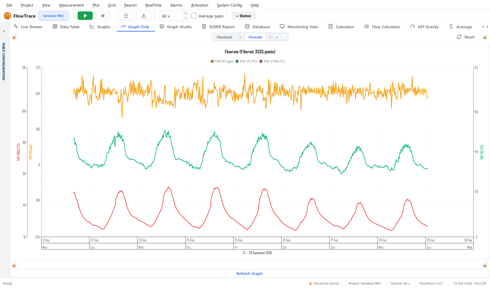
Graph Studio: PDF reports
- Template: pick a saved template or create a new one.
- Report heading: type the title, subtitle, footer and notes.
- Report header: type the well name. Click a dashed + logo box to add a logo (left = your company, right = client or partner); right-click a box to change or remove it.
- Channels: tick what to plot, pick colour and axis, then set the time range.
- Display: adjust colours, axes and style.
- Click Export PDF and choose where to save. The PDF matches the preview exactly.
Save the look as a Template once and reuse it for every well. Templates keep the style, not the data. The report page always prints on white paper, whichever theme is used.
Paperwork
EOWR and Excel exports
EOWR Report (End of Well Report)
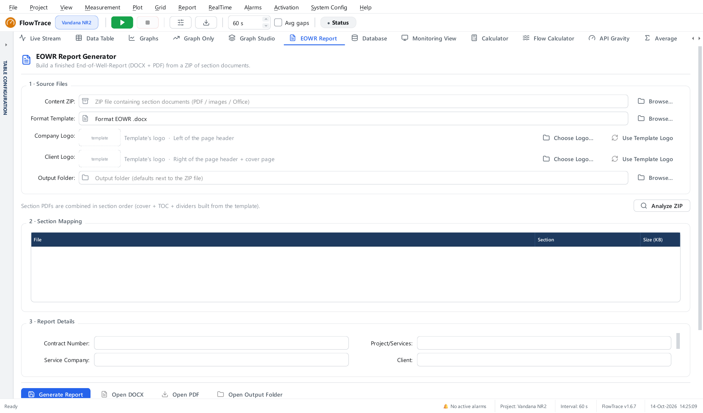
- Source Files: choose the content ZIP (PDFs, images, Office files), the Word format template (a default is provided) and the output folder.
- Logos (optional): Choose Logo... next to Company Logo (left of the page header) and Client Logo (right, and on the cover). Use Template Logo switches back.
- Section Mapping: click Analyze ZIP and check which section each file goes into.
- Report Details: fill in contract number, project, service company and client.
- Click Generate Report and wait for the progress bar. Then Open DOCX, Open PDF or Open Output Folder.
Converting Word, Excel and PowerPoint files needs Microsoft Office on this computer. Otherwise convert them to PDF before putting them in the ZIP.
Export Data to Excel
- Filter the Data Table to the rows you want and choose the columns in the sidebar.
- Click Export Data (toolbar, File menu or Report menu) and choose where to save.
The workbook has the same grouped headers as the Data Table, alarm colours, and an image of the current graph.
If the export fails, the target file is probably open in Excel. Close it and export again.
Field paperwork
Calibration Reports and MMT
The Calibration Reports tab holds 15 ready-made field-report templates, one sub-tab each. Every template keeps any number of saved copies, is saved with the Project, and exports to PDF. The MMT tab (Challan and MMR) works with the same editor.
How a report editor is laid out
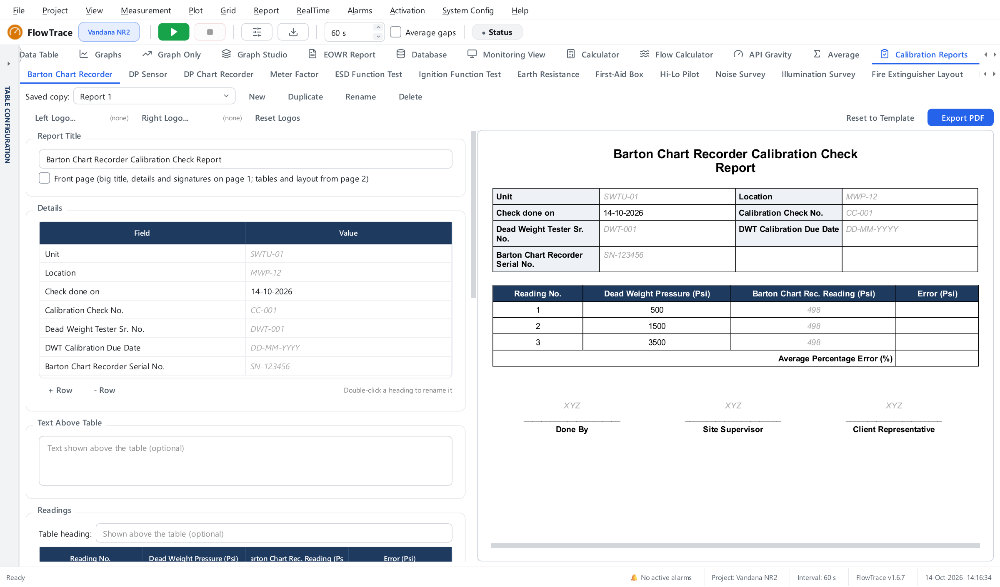
| Part | What it does |
|---|---|
| Saved copy | Pick a saved report. New starts an empty one, Duplicate copies the current one (ideal for the next check), Rename, Delete. |
| Left Logo / Right Logo | Your company logo and the client logo on the page header. Reset Logos clears them. |
| Report Title | The heading of the report. Tick Front page to put a big title, the details and signatures on page 1, and the tables and layout from page 2. |
| Company name & address | Letterhead text, where the template has one. |
| Details | Field / value table (unit, location, date, serial numbers...). + Row / - Row; double-click a heading to rename it. |
| Text Above Table | Optional text printed above the readings. |
| Readings tables | Each table has a heading and a note below it. Error columns and average % error are worked out for you. Some templates add tables with + Add Table or + Add Meter. |
| Site Layout | Layout drawings, one or more pages: + Add Page, Edit Layout... (opens the Layout Editor, chapter 11), Remove Layout, Show in report, Start on a new page. |
| Images | + Add Image... for photos, each with a caption, Adjust... (crop / size) and Remove. |
| Text below table, footer, signatures | Closing notes, a footer such as the form version, and the signature names (Done By, Site Supervisor, Client Representative...). |
| Reset to Template / Export PDF | Put the current copy back to the template text, or save it as a PDF. |
Grey italic text in a field is an example value from the template (SWTU-01, MWP-12, XYZ). It only shows what goes where and is never printed in the PDF; an empty field prints blank.
Make a calibration report
- Open Calibration Reports and click the template's sub-tab (use the ◂ ▸ arrows at the right for the last ones).
- Click New, or pick the last report and click Duplicate.
- Add the logos once with Left Logo... and Right Logo...
- Fill in the Details: unit, location, check date, instrument serial numbers and calibration due dates.
- Type the readings into the table. The error and average % error fill in by themselves.
- Add notes, signature names and, where needed, a layout or photos.
- Check the preview on the right and click Export PDF.
The 15 templates
| Sub-tab | Report title | What it records |
|---|---|---|
| Barton Chart Recorder | Barton Chart Recorder Calibration Check Report | Dead-weight tester pressure against the chart recorder reading; error per point. |
| DP Sensor | DP Sensor Calibration Check Report | Manometer (inch WC) against the DP sensor; error per point. |
| DP Chart Recorder | DP Chart Recorder Calibration Check Report | Manometer (inch WC) against the DP chart recorder; error per point. |
| Meter Factor | Meter Factor Calibration Report | Meter and surge-tank initial / final readings per run; meter factor and average meter factor. One table per meter (+ Add Meter). |
| ESD Function Test | ESD System Function Test Report | Each ESD item with location, shut-in time and remarks. |
| Ignition Function Test | Ignition System Function Test Report | Equipment, configuration and test result. |
| Earth Resistance | Resistance Measurement Sheet | Earth rod number, resistance (ohm) and remarks. |
| First-Aid Box | First-Aid Box | Items with quantity and expiry date, plus the refilling / inspection chart. |
| Hi-Lo Pilot | Hi Pilots Calibration | Calibration statement for the Hi-Hi pilots (for example tested at 100 psi on the surge tank and 1000 psi downstream of the choke manifold), location, well and unit, witnessed by the client. |
| Noise Survey | Noise Survey Report | Location and noise level (dB), with a site layout showing the readings. |
| Illumination Survey | Illumination Survey Report | Location and illumination level (lux), with a site layout. |
| Fire Extinguisher Layout | Fire Extinguisher Layout | Extinguisher list (type, capacity, serial no., refill and expiry dates) and the layout with each extinguisher marked. |
| Mock Drill Report | Mock Drill Report (Non-IRT) | Drill date and times, scenario, events, observers and observations, with letterhead and cover page. |
| SWT Layout | SWT Layout | The surface well test equipment layout drawing. |
| Wellpad Escape Route | Wellpad Escape Route | Escape route drawing over several layout pages. |
Meter Factor: enter the surge tank factor (bbl per tank unit, for example 0.1088 bbl/cm) above each table, then the meter and tank readings of each run. Use + Add Meter for a second meter (oil and water turbine meters).
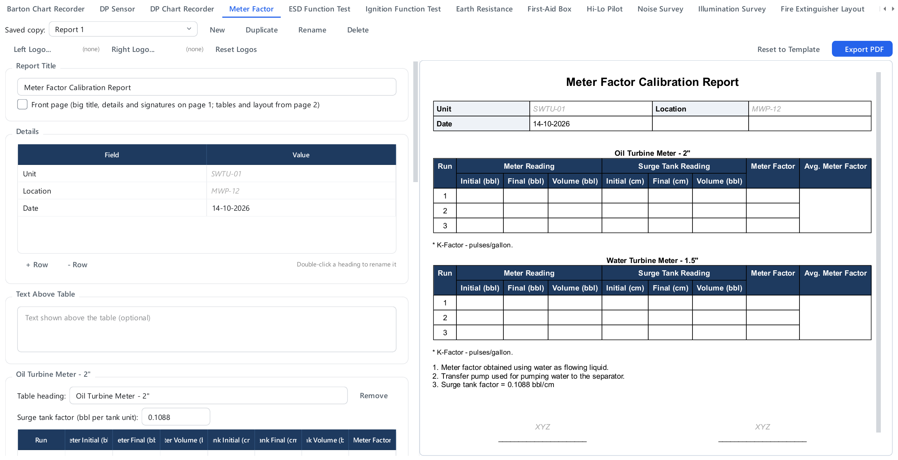
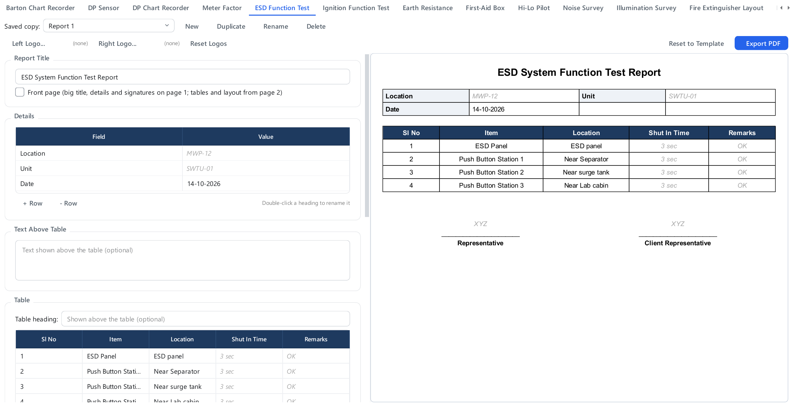
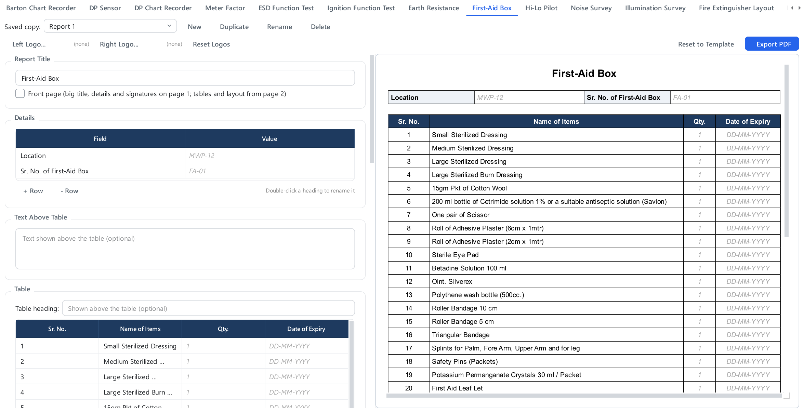
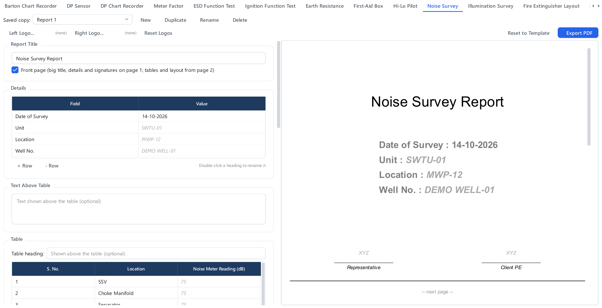
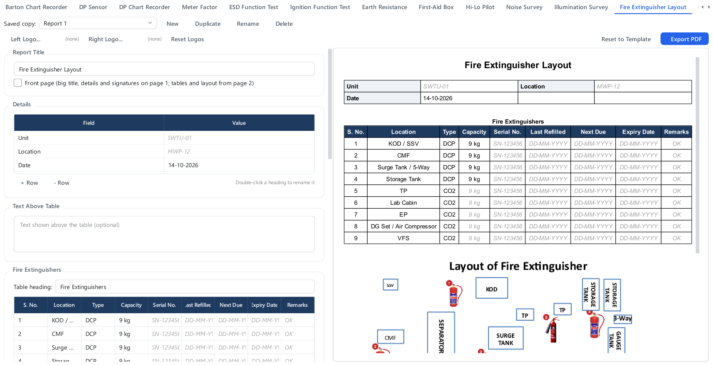
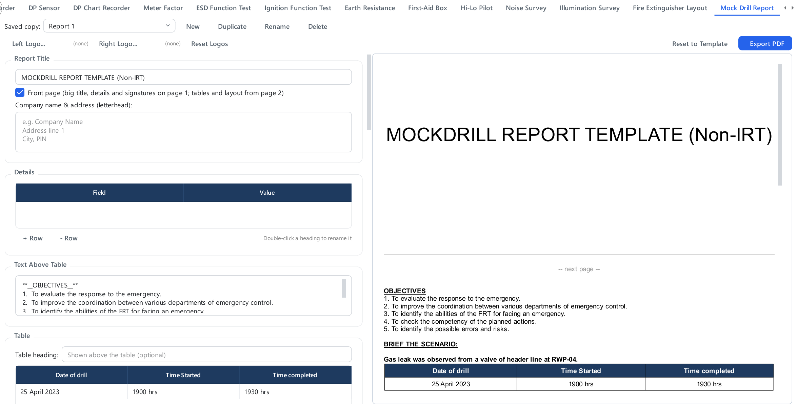
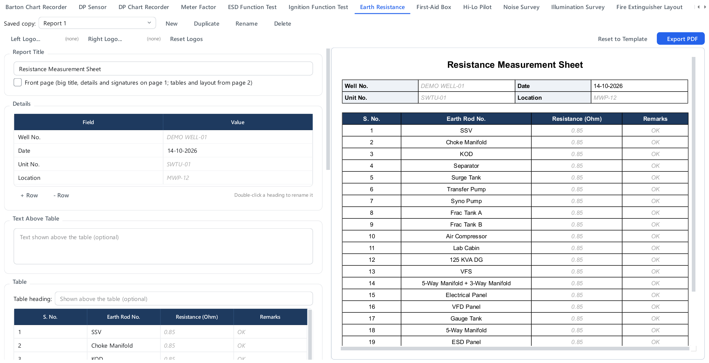
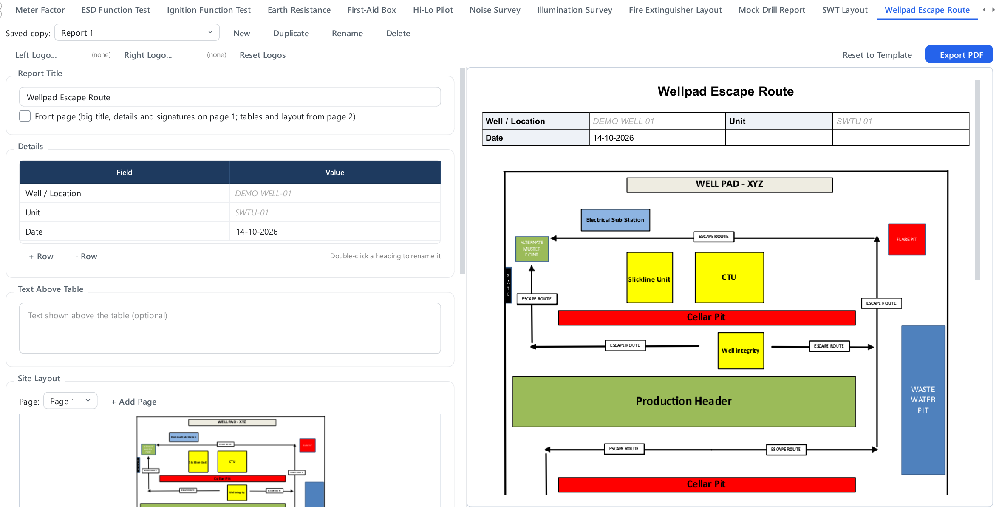
MMT: GST Challan
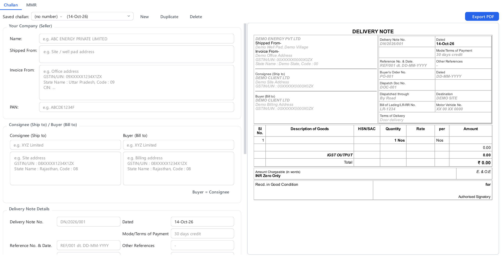
- Open MMT › Challan. Pick a Saved challan or click New.
- Your Company (Seller): name, Shipped From address, Invoice From address with GSTIN and state code, PAN.
- Consignee (Ship to) and Buyer (Bill to): name, address, GSTIN, state. Click Buyer = Consignee when they are the same.
- Delivery Note Details: note number, date, terms of payment, reference, buyer's order, dispatch document, dispatched through, destination, LR / bill of lading, vehicle number, terms of delivery.
- Goods: description, HSN/SAC, quantity, rate and unit for each line. Choose IGST, or CGST + SGST. Totals and the amount in words are calculated.
- Click Export PDF.
MMT: MMR delivery challan
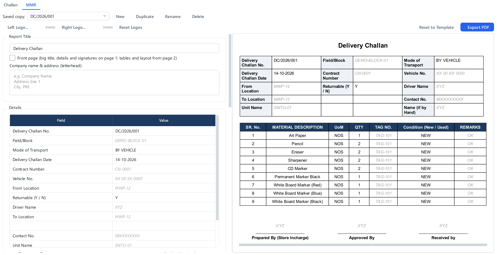
- Open MMT › MMR and pick or create a saved copy.
- Fill in the details: challan number and date, field / block, contract number, from and to location, unit, mode of transport, vehicle, driver and contact, returnable (Y / N).
- List the materials: description, UoM, quantity, tag number, condition (new / used) and remarks.
- Enter the signature names (Prepared By, Approved By, Received By) and click Export PDF.
Drawings
P&ID and the Layout Editor
P&ID sheets
The P&ID tab has six drawing sheets: Full Package, MPFM, EWT, Fix Setup, Miscellaneous and PFD. Each sheet is a report with a title block (unit, date, location), saved copies, logos and Export PDF, and its drawing is edited in the Layout Editor.
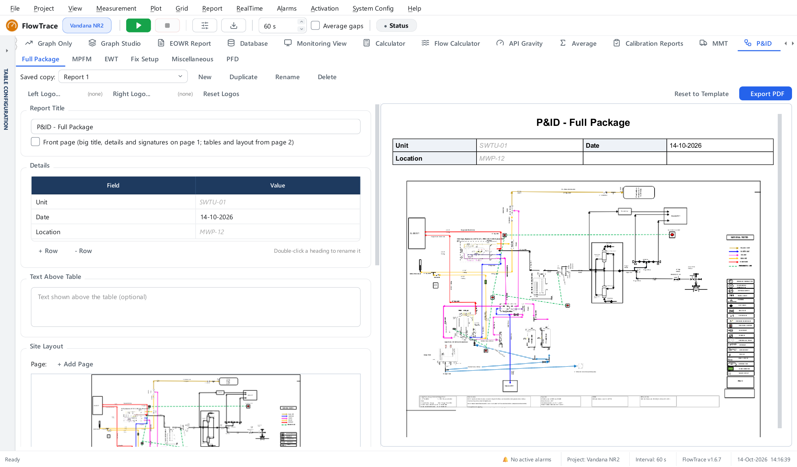
- Click the sheet's sub-tab and pick a saved copy, or click New / Duplicate.
- Fill in the title block and add logos.
- Under Site Layout click Edit Layout... to change the drawing.
- Click Export PDF. Reset to Template brings back the original drawing.
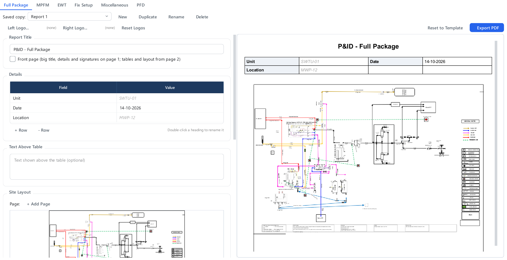
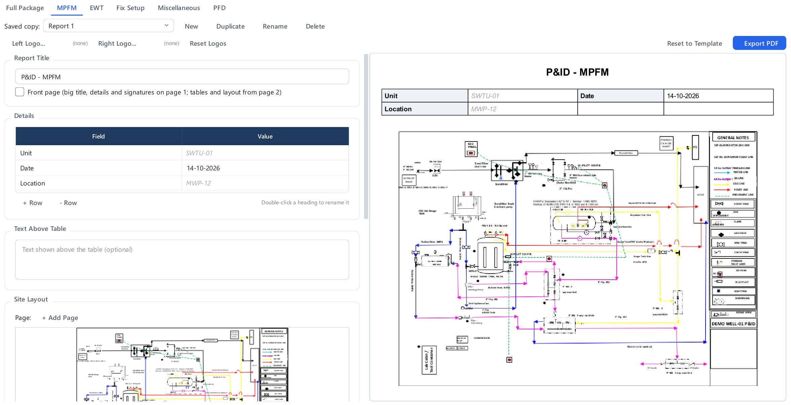
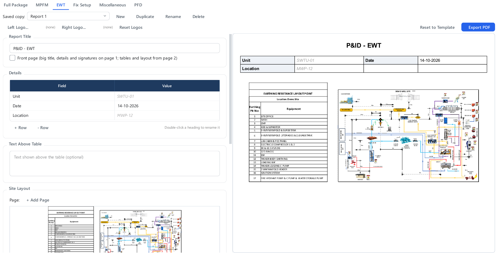
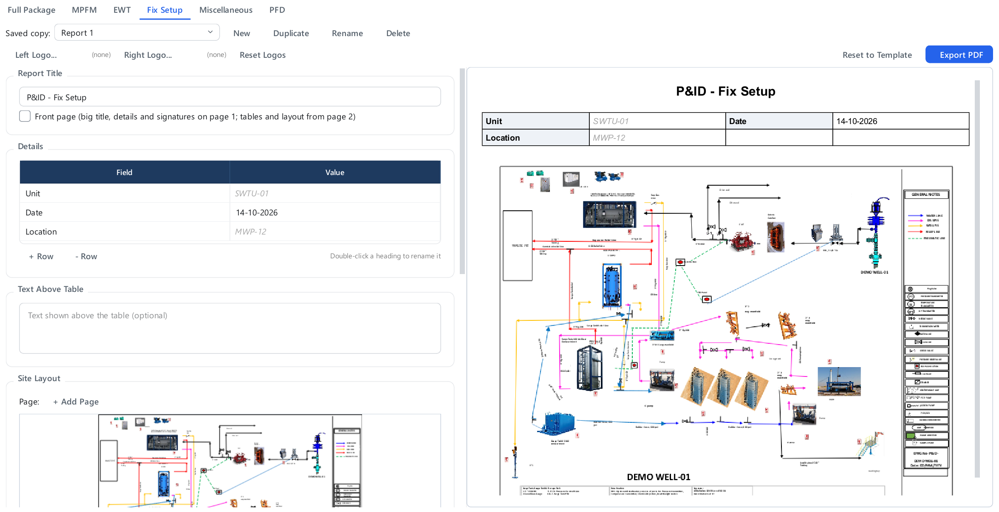
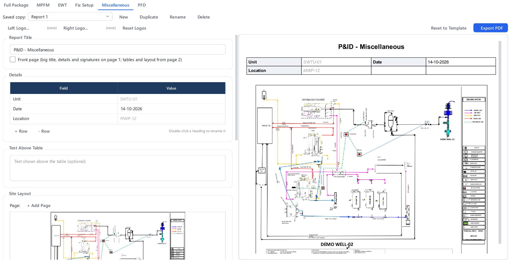
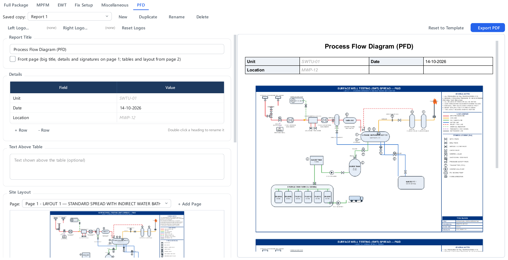
The Layout Editor window
Open it with Edit Layout... in any P&ID sheet or in a report with a Site Layout (Noise, Illumination, Fire Extinguisher Layout, Mock Drill, SWT Layout, Escape Route). It opens as its own window and works on a copy: nothing changes in the report until you click OK.
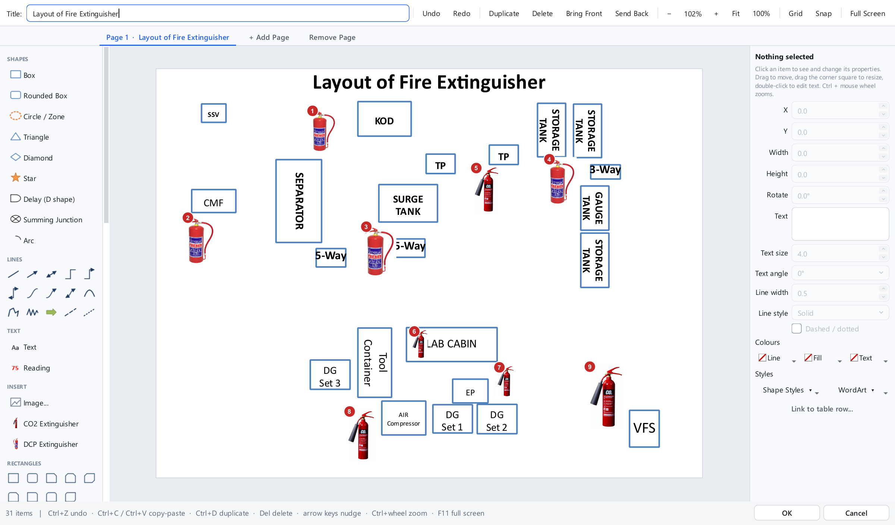
| Area | What is there |
|---|---|
| Toolbar | Title of the page, Undo, Redo, Duplicate, Delete, Bring Front, Send Back, zoom − / +, Fit, 100%, Grid, Snap, Full Screen. |
| Page tabs | Page 1, Page 2... Each page prints on a page of its own. + Add Page / Remove Page. |
| Palette (left) | Everything you can add, in groups (table below). Click a tool to drop it on the page. |
| Drawing (centre) | The page. Click to select, drag to move, drag the corner square to resize, double-click to edit text. |
| Properties (right) | X, Y, Width, Height, Rotate, Text, Text size, Text angle, Line width, Line style, Line / Fill / Text colours, Shape Styles, WordArt, Link to table row... |
| Status line (bottom) | Number of items and the main shortcuts. OK keeps the changes, Cancel throws them away. |
The palette
| Group | Tools |
|---|---|
| Shapes | Box, Rounded Box, Circle / Zone, Triangle, Diamond, Star, Delay (D shape), Summing Junction, Arc. |
| Lines | Line, Arrow, Double Arrow, Elbow connectors (plain, arrow, double arrow), Curved connectors (plain, arrow, double arrow), Curve, Freeform shape, Scribble, Block Arrow, Dashed Line, Dotted Line. |
| Text | Text label, and Reading: a number box that can show a value from the report's table. |
| Insert | Image (from a file), CO2 Extinguisher and DCP Extinguisher symbols. |
| Shape gallery | Rectangles, Basic Shapes, Block Arrows, Equation Shapes, Flowchart, Stars and Banners, Callouts, Action Buttons (scroll down the palette). |
Drawing step by step
Add and arrange shapes
- Click a tool in the palette, for example Box. It appears on the page.
- Drag it into place. Drag the corner square to resize. Arrow keys nudge the selection.
- Double-click it and type its text (for example SEPARATOR). Set Text size and Text angle (0°, 90°, 270°) in Properties.
- Set colours with Line, Fill and Text, or pick a one-click Shape Styles look (outline, fill, gradient, glossy, shadow, transparent). WordArt styles text.
- Use Bring Front / Send Back when shapes overlap, and Rotate to turn an item about its centre.
Connect equipment with lines
- Pick a line kind: straight, arrow, elbow or curved connector.
- Drag the two end handles onto the equipment you want to join.
- Drag the yellow handle to move the bend of an elbow or curved connector.
- Set Line width and Line style (solid, dashed, dotted) in Properties.
Freeform and scribble
- Freeform: Shape: click each corner; double-click or right-click to finish. End on the first point to close the shape.
- Freeform: Scribble: drag with the mouse to draw; click the tool again, right-click or press Esc to stop.
Readings linked to the report table
- Add a Reading box and place it at the measuring point on the layout.
- Click Link to table row... and pick the row of the report's table (for example a noise or lux reading).
- The box now shows that row's value and updates when the table changes. Hover over it to see the link.
Images and extinguisher symbols
- Image... places a picture (logo, photo, scanned sketch) that you can move and resize like a shape.
- CO2 Extinguisher and DCP Extinguisher drop the standard symbols. Add a numbered Star or Text next to each to match the extinguisher list.
Keyboard shortcuts
| Keys | Action |
|---|---|
| Ctrl + Z / Ctrl + Y | Undo / Redo |
| Ctrl + C / Ctrl + X / Ctrl + V | Copy / Cut / Paste the selection |
| Ctrl + D | Duplicate the selection |
| Del | Delete the selection |
| Arrow keys | Nudge the selection |
| Ctrl + mouse wheel, Ctrl + − / Ctrl + = | Zoom out / in |
| Ctrl + 0 | Fit the whole page in the window |
| F11 | Full screen |
| Esc | Stop Scribble / Freeform drawing |
Turn on Grid and Snap to line equipment up neatly. Hold the layout in a saved copy, then Duplicate it for the next well instead of drawing from scratch.
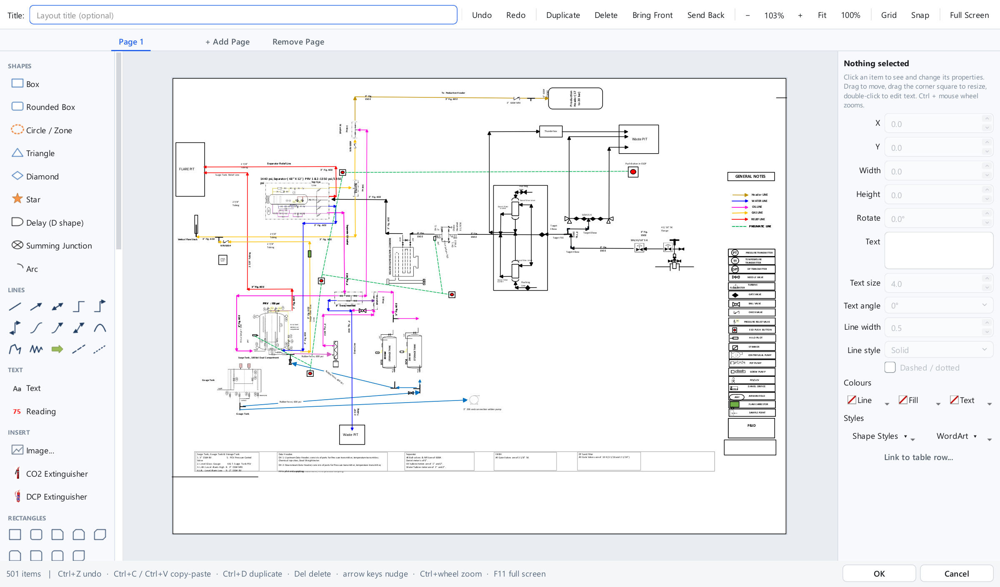
Field tools
Calculators
The Calculator, Flow Calculator, API Gravity and Average tabs are stand-alone tools. They never change your logged data.
Calculator tab
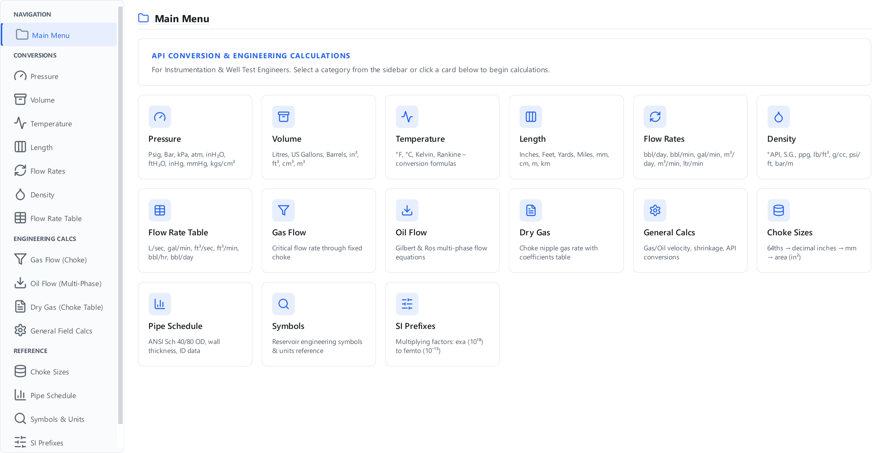
- Open the Calculator tab. The sidebar has four groups: Navigation, Conversions, Engineering Calcs and Reference.
- Click a page in the sidebar, or a card on the Main Menu.
- Conversions: type a value and pick its unit; every other unit is shown at once.
- Engineering calcs: fill in the Inputs (the unit is shown in each box) and click the blue Calculate button.
- The Result shows the answer. The green line under it repeats the formula with your numbers, so the calculation can be checked. The Formula Reference box explains each term.
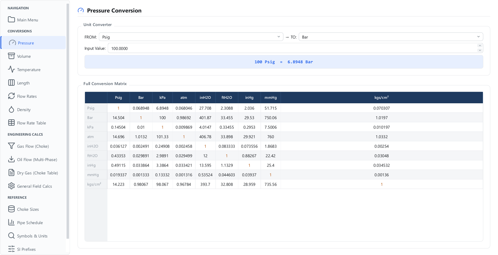
Converts between psig, bar, kPa, atm, inH₂O, ftH₂O, inHg, mmHg and kg/cm².
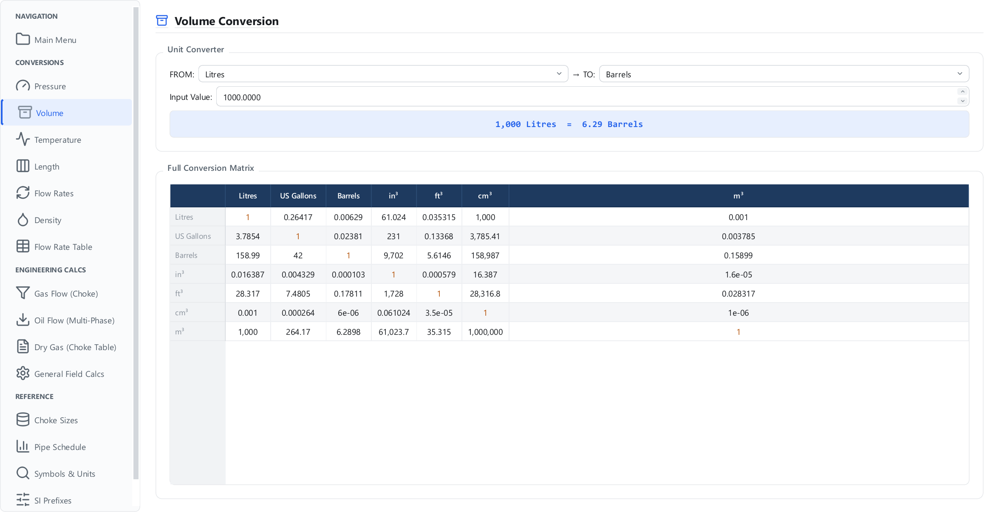
Litres, US gallons, barrels, in³, ft³, cm³ and m³.
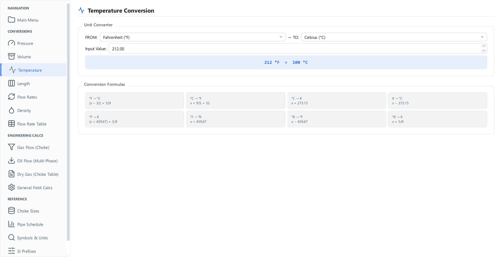
°F, °C, Kelvin and Rankine, with the conversion formulas.
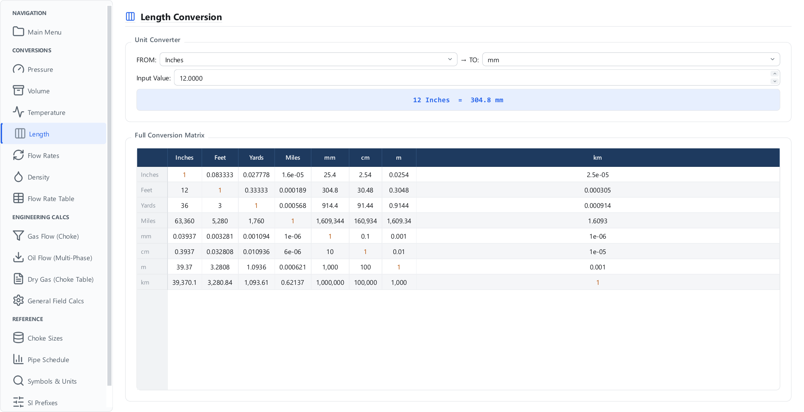
Inches, feet, yards, miles, mm, cm, m and km.
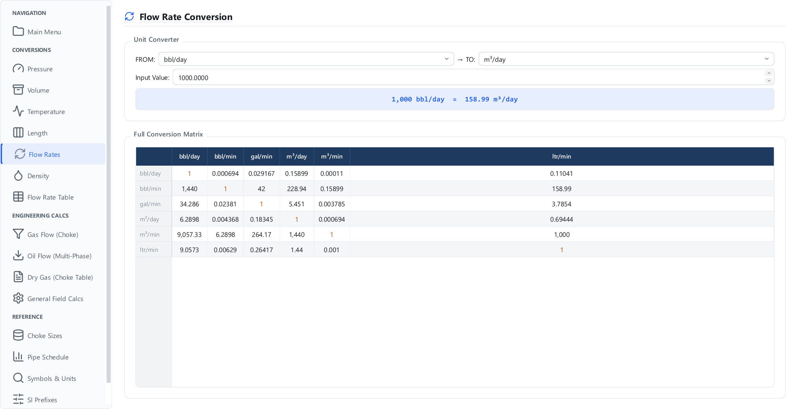
bbl/day, bbl/min, gal/min, m³/day, m³/min and litre/min.
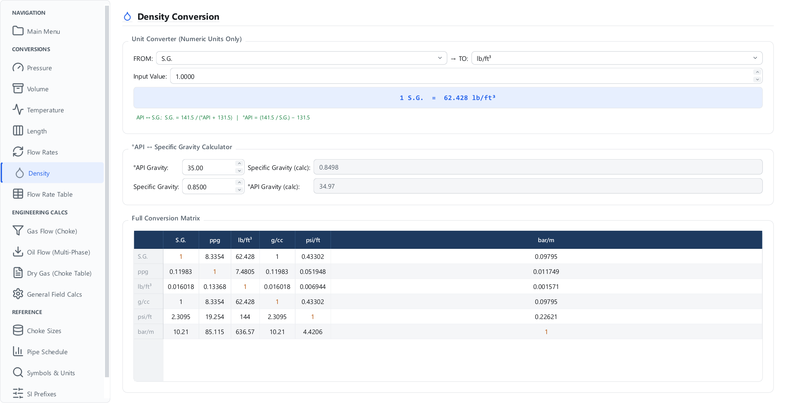
°API, specific gravity, ppg, lb/ft³, g/cc, psi/ft and bar/m.
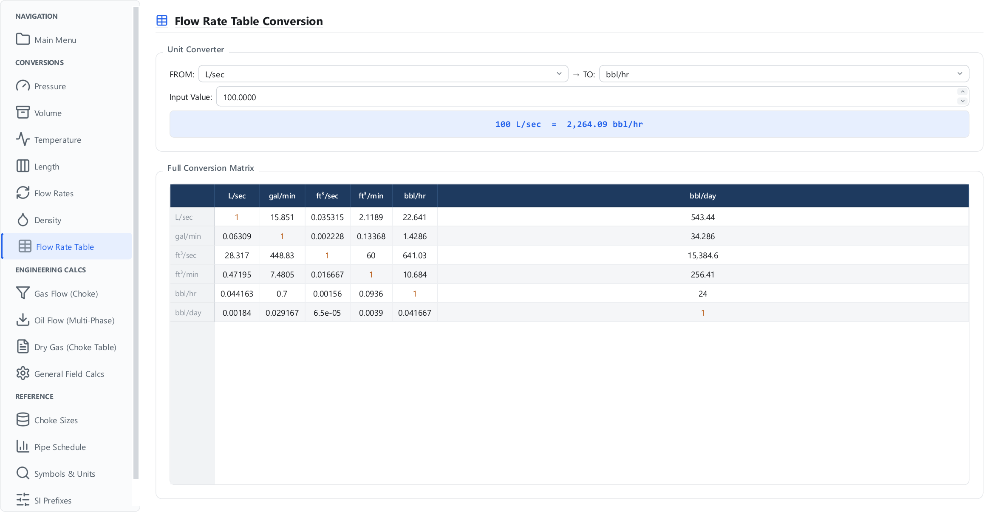
One rate shown in L/sec, gal/min, ft³/sec, ft³/min, bbl/hr and bbl/day at once.
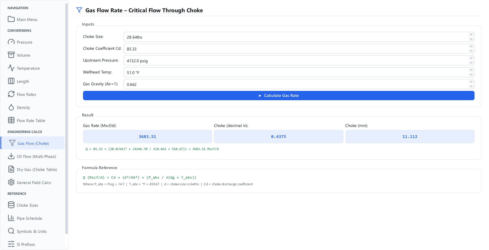
Critical gas flow through a fixed choke: choke size (64ths), choke coefficient Cd, upstream pressure, wellhead temperature and gas gravity give the gas rate in Mscf/d, plus the choke in decimal inch and mm.
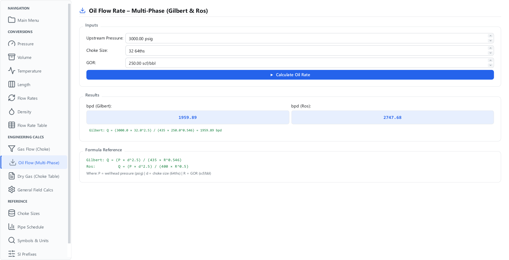
Gilbert and Ros correlations: upstream pressure, choke size and GOR give the oil rate in bpd by both methods.
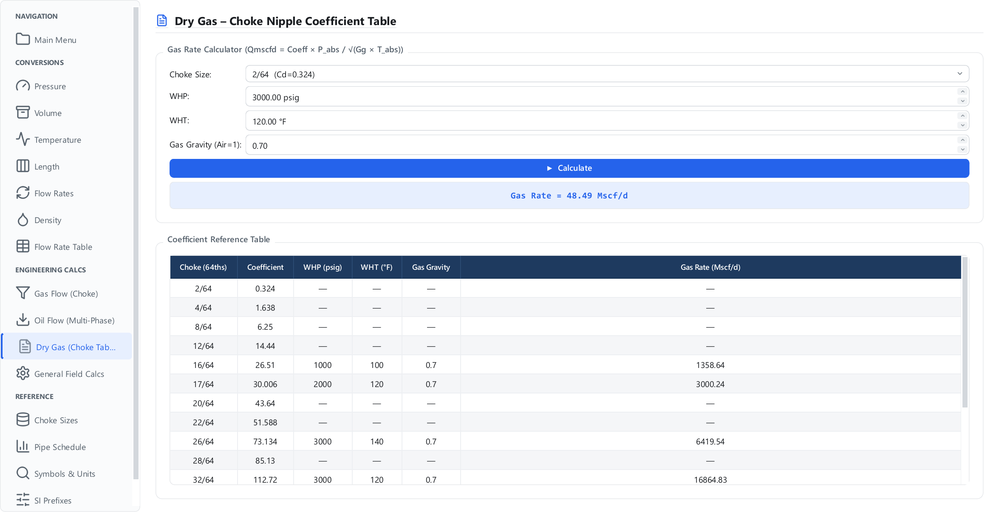
Gas rate through a choke nipple using the coefficients table.
Gas and oil velocity, shrinkage and API conversions.
Choke sizes in 64ths with decimal inch, mm and area (in²).
ANSI Schedule 40 / 80 pipe: OD, wall thickness and ID.
Reservoir engineering symbols and their units.
Multiplying factors from exa (10¹⁸) to femto (10⁻¹⁵).
Flow Calculator tab
- Dry Gas Flow: line pressure, temperature, gas gravity, pipe inside diameter, flow velocity and compressibility give the flow at standard conditions (14.73 psia / 60 °F). Heating value is optional.
- Orifice Meter: a quick orifice check on typed values, without touching the Orifice Gas Flow columns of the Project.
- Click Calculate; Reset brings back the example values.
API Gravity tab
- Choose the Calculation Mode, for example Specific Gravity → API.
- Set the reference temperature (60 °F by default) and type the known value.
- Click Calculate. Specific gravity, API gravity and density are converted into each other.
Average tab
- Choose Date / time range or Last N Hours / Minutes ending now.
- Tick the channels.
- Fill in Well / Location, Prepared by and Description.
- Click Calculate Average. Each result shows its unit and the number of readings used.
- Export to Excel saves the results; WhatsApp Message sends them with the well, author and remarks.
Keeping data safe
Data, backups and settings
Database tab
| Button | What it does |
|---|---|
| Apply Filter | Show readings between the Start and End date. |
| Refresh Stats | Update total readings and database size. |
| Optimize DB | Compact the database file. Safe; no data is removed. |
| Export Data | Export the database to Excel. |
| Reset DB | Clears all readings of this Project. An Excel backup is saved first and you are asked to confirm. |
Reset DB cannot be undone inside FlowTrace. Keep the backup it creates, or use File › Save Project As... first.
Where your data is stored
| Item | Location |
|---|---|
| All Projects | Documents\FlowTrace\Projects\<Project name> |
| Project settings | config.json in the Project folder |
| Readings | modbus_data.db in the Project folder |
| CSV logs | Live Log CSV folder in the export path |
| Alarm Log | Alarm Log.csv in the Project folder |
| Upgrade backups | Documents\FlowTrace\Upgrade Backups |
- Data is kept outside the program folder. Installing a new version, reinstalling or uninstalling never deletes it.
- The first time a new version starts, every Project is backed up automatically.
- To move a job to another PC: File › Save Project As... on the old PC, then Project › Import Project... on the new one.
Theme and display
- View › Theme: Light for offices and bright cabins, Dark for night shifts. Applies at the next start. Reports and exports always use light colours.
- File › Column Order / Visibility...: arrange and hide columns.
- Column order, hidden columns and graph set-ups are saved with each Project. Every tab can also be opened from the View menu.
When something is wrong
Troubleshooting and support
Cannot connect to the device
| Message / symptom | What to do |
|---|---|
| Could not open COM port | Check the cable and converter and the port number. Close any other program using the port (Modbus Poll, another FlowTrace window). |
| Access is denied | Another program or a hidden duplicate COM port holds the port. Device Manager › View › Show Hidden Devices › Ports: uninstall grey or duplicate entries, reconnect and try again. |
| The device did not respond | Baudrate, Parity, Stop Bits or Slave ID do not match the device. Correct them in System Config. |
| Connection drops during a job | Monitoring stops safely. Fix cable or power, then Start Monitoring. A new session starts; earlier data is kept. |
Values look wrong or are missing
| Symptom | What to do |
|---|---|
| Wrong scale | Check the channel's Unit, Formula, Multiplier and Offset in Channels. |
| Values in the wrong columns | Check Start Register and Channel Count against the device's register map. |
| A column is missing | It may be hidden. Tick it in the sidebar. |
| Measurement column is empty | Open its tool from the Measurement menu and check every input has a channel. |
| Rows missing in the Data Table | Reset the date / time filter. The table opens on today's date. |
| Gas rate unexpectedly low or high | Check the Tf channel: a channel in °C is converted to °F. Check bore, pipe ID and gas gravity. |
Graphs, exports and activation
| Symptom | What to do |
|---|---|
| Graph is empty | The time window has no data. Set Start / End to a period with readings, or click Reset. |
| Graph stays zoomed or a band looks squeezed | Axis locks or a manual zoom are active. Use Graph Actions › Reset View. |
| Key "not valid for this computer" | The key was made for another Machine Code. Send this computer's code and ask for a new key. |
| Start Monitoring is refused | The licence has expired or was cancelled. Open Activation › Activate / Renew... and enter a new key. |
Updates and support
- To update, run the new FlowTrace installer. It upgrades in place and keeps all Projects and settings.
- Your version number is in Help › About FlowTrace. Quote it when you contact support.
- Support and activation keys: info@energyforge.in